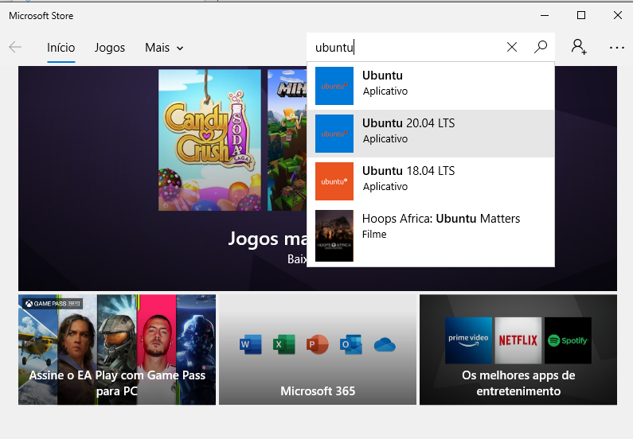
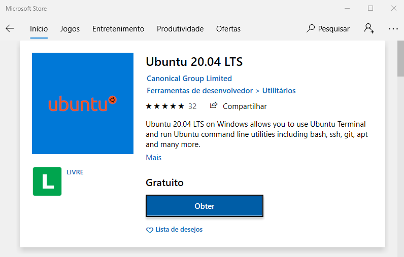
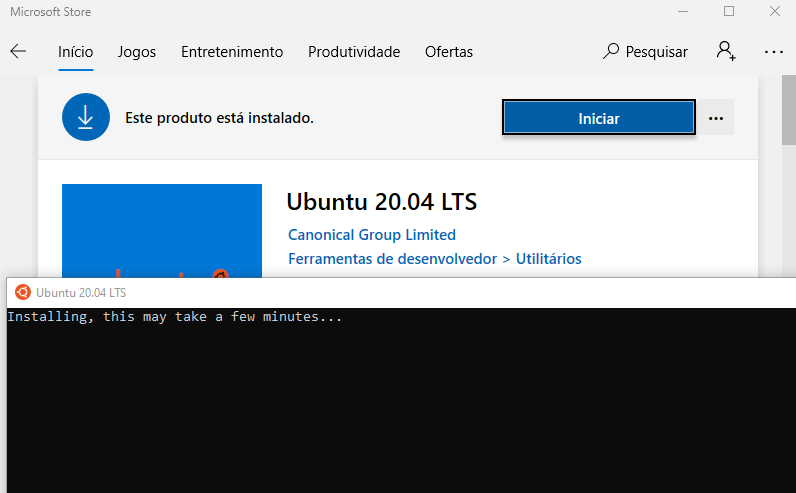
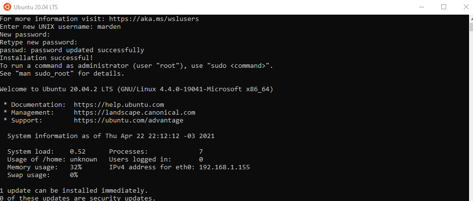

WSL 2 - install
Instalando o WSL2 + Ubuntu
Pré-requisitos
- Windows 10 Home ou Professional (versão 20.04 ou superior)
- Conta no Docker Hub (opcional para fazer pull de imagens)
- 4GB de RAM ou mais
Ativar o WSL no Windows 10 (via powershell)
Execute o Powershell como administrador.
PS C:\> Enable-WindowsOptionalFeature -Online -FeatureName Microsoft-Windows-Subsystem-Linux
PS C:\> dism.exe /online /enable-feature /featurename:VirtualMachinePlatform /all /norestart
Para confirmar, ainda no powershell digite:
Reinicie o Windows para concluir a instalação do WSL.
Instalar o WSL 2
Baixar o kernel do WSL 2 do link https://docs.microsoft.com/pt-br/windows/wsl/wsl2-kernel e instalar o pacote.
Ativar o WSL 2
Via Microsoft Store
Instalar o Ubuntu 20.04



